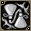
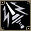

吟遊詩人的技能/魔法詳細解說請看這裡
可同時使用的技能/魔法及能力提升道具的解說請看這裡
延遲0的魔法/技能，使用混合藥水時可以連射。
起初有一段時期攻擊技能的傷害不會因現身而上升，但現在已經適用效果了。
提供情報或編輯請求，請到情報提供公佈欄、編輯公佈欄。
攻擊
| 名稱 | 習得條件 | 消耗 | 延遲 | 取得途徑 |
| 鳥之噪音 | Lv15 | SP:13 | 0 | NPC:斯歐米神官艾莉絲米米克拉娜 |
| 效果 | 用敵人討厭的聲音直接造成傷害(吉他)基本攻擊力:65 |
| 靈魂尖叫 | Lv51 | SP:49 | 0.5秒 | NPC:斯歐米神官凱蒂 |
| 效果 | 技能等級習得條件:噪音之歌SLv30用不和諧音折磨對象，消耗其體力(吉他)基本攻擊力:190 |
| 疾風交響曲 | Lv90 | MP:200 | 30秒 | [伊克拉斯] |
| 效果 | 對目標周圍 6×6 範圍內的敵人每秒造成風屬性傷害(豎琴)屬性:風 對象:地面 範圍:6*6 威力:依 INT、MDAM、Lv |
 替代鑽頭 替代鑽頭 | Lv100,FLv70 | SP:100 | 0 |
釋放雖小卻非常銳利旋轉的旋律。基本攻擊力: 威力:依 INT、MDAM 命中：依 WIS、MHIT雖算技能但沒有技能等級 遠距離攻擊發動前有蓄力（標示為「咒語時間 0.2秒」）
恢復
| 名稱 | 習得條件 | 消耗 | 延遲 | 取得途徑 |
 鳥之治癒 鳥之治癒 | Lv5 | MP:40 | 0 | NPC:斯歐米神官米米克 |
| 效果 | 治療自己的傷口 |
輔助－戰鬥
| 名稱 | 習得條件 | 消耗 | 延遲 | 取得途徑 |
| 慢節奏民謠舞 | Lv5 | SP:20 | 0 | NPC:斯歐米神官米米克 |
| 效果 | 降低敵人的移動速度(吉他)效果:枷鎖之歌(降低移動速度)※對象為怪物時，攻擊速度、自然回復速度也會降低持續時間:依 INT+Lv 45秒(INT+Lv=100) 1分(同200) |
| 鳥之歇斯底里 | Lv25 | SP:35 | 0 | 貝蒂[貝蒂]法西奈米米克 |
| 效果 | 大幅降低對象的命中率，並持續造成傷害(吉他)效果:暴動之歌(HIT-40,毒 HP-5%/2秒 CON20 減輕 1%)持續時間:依 INT+Lv 18秒(INT+Lv=100) 24秒(同200) |
| 安眠曲 | Lv31 | MP:150 | 0 | 神之手 |
| 效果 | 用溫柔的聲音讓對象入睡的演奏。受到打擊就會醒來(豎琴)效果:安眠曲(睡眠) |
| 束縛之聲 | Lv41 | MP:150 | 0 | 史蒂帕尼 |
| 效果 | 用音波擾亂發聲，封印對象的魔法詠唱(豎琴)效果:光之封印曲(沉默) |
| 死亡交響曲 | Lv60 | MP:200 | 15秒 | 普魯魯特[馬凱拉][阿納坎] |
| 效果 | 讓對象感受到死亡的恐懼。(吉他)效果:恐懼(混亂)※書本時(敵人的移動速度及 AC/MC 會降低。) |
| 音波閃光 | Lv61 | MP:150 | 0 |  布羅尼(紅)八十二之鬼 布羅尼(紅)八十二之鬼 |
| 效果 | 以強烈的音波衝擊奪走感覺，封印對象的視力(豎琴)效果:夜盲曲(黑暗) |
| 音樂控制 | Lv71 | MP:220 | 0 | 強普斯米爾八十五之鬼 |
| 效果 | 用不可思議的音階擾亂方向感，使對象混亂(豎琴)效果:搖頭之歌(混亂) |
 驅離 驅離 | Lv80 | MP:250 | 12.5秒 |  卡梅爾船長 卡梅爾船長 |
| 效果 | 用突然的爆音嚇到對方，讓對象失去目標(豎琴)效果:初始化畫面內所有敵人的目標 |
| 第13樂章 | Lv85 | MP:350 | 0 | [大地派斯] |
| 效果 | 釋放削減生命力的音波，使接觸到的所有對象中毒(豎琴)效果:第13樂章(毒 HP-6%/1秒 CON20 減輕 1%)持續時間:固定15秒※對象為玩家時，會傳染給相鄰的玩家 |
 混亂 混亂 | Lv90 | SP:80 | 0 | 使用:國王之心 |
| 效果 | 用有咒力的音階使 1 隻怪物混亂，讓牠們自相殘殺命中: SLv+自Lv+自wis-敵Lv-敵wis=命中率% 詳情請看解說 |
 逆向光輝 | Lv115,FLv85 | MP:150 | 0 | 什麼都有彩券被束縛的靈魂 |
| 效果 | 持續吸收對對象造成的傷害。效果:對對方每 2 秒減少最大HP 4% 的毒，自己每 2 秒回復 HP100 |
輔助－支援
| 名稱 | 習得條件 | 消耗 | 延遲 | 取得途徑 |
| 提升能力 | Lv10 | MP:40 | 0 | NPC:斯歐米神官米米克 |
| 效果 | 依對方職業在一定時間內提升對應的屬性值戰,騎:STR+20 修,阿:CON+20 魔,吟:INT+20 聖:WIS+20 賊:DEX+20 預:STR+10 INT+10持續時間:固定1分鐘 |
| 提升全能力 | Lv10 | MP:50 | 0 | NPC:斯歐米神官米米克 |
| 效果 | 在一定時間內提升全屬性值效果:對象的STR,CON,INT,WIS,DEX+10持續時間:固定1分鐘 |
| 動物力量之鼓 | Lv10 | MP:50 | 0 | NPC:斯歐米神官米米克 |
| 效果 | 持續回復隊伍成員的HP(鼓)效果:畫面內全體隊伍成員每秒回復HP 10持續時間:依 INT+Lv 2分58秒(INT+Lv=100) 3分58秒(同200) |
| 動物技能之鼓 | Lv15 | MP:60 | 0 | NPC:斯歐米神官米米克 |
| 效果 | 持續回復隊伍成員的SP(鼓)效果:畫面內全體隊伍成員每秒回復SP 4持續時間:依 INT+Lv 2分58秒(INT+Lv=100) 3分58秒(同200) |
| 動物魔力之鼓 | Lv20 | MP:60 | 0 | NPC:斯歐米神官米米克 |
| 效果 | 持續回復隊伍成員的MP(鼓)效果:畫面內全體隊伍成員每秒回復MP 4持續時間:依 INT+Lv 2分58秒(INT+Lv=100) 3分58秒(同200) |
| 增加體力 | Lv30 | MP:160 | 0 | NPC:斯歐米神官米米克西耶拉 |
| 效果 | 持續增加自己周圍角色的HP(豎琴)效果:以自己為中心，自己以外周圍 2 格每秒回復HP 400持續時間:依 INT+Lv 15秒(INT+Lv=100) 20秒(同200) |
| 支持者 | Lv35 | MP:80 | 0 | 歐里艾爾(黑)米米克伊亞拉[伊亞拉] |
| 效果 | 提升目標周圍角色的DAM・HIT(空手)效果:對象周圍 2 格 DAM+30,HIT+40持續時間:依 INT+Lv(確認有 INT 加權效果) 約45秒(INT+Lv=100) 約60秒(同200) |
| 增加魔力 | Lv40 | MP:200 | 0 | NPC:斯歐米神官米米克帕梅拉 |
| 效果 | 持續增加自己周圍角色的MP(豎琴)效果:以自己為中心，自己以外周圍 2 格每秒回復MP 120持續時間:依 INT+Lv 15秒(INT+Lv=100) 20秒(同200) |
| 安全防護 | Lv45 | MP:80 | 0 | 歐里艾爾(黑)米米克朵蘿蕾 |
| 效果 | 強化目標周圍角色的物理防禦力・魔法防禦力(空手)效果:對象周圍 2 格 AAR+30,SAR+60持續時間:依 INT+Lv(確認有 INT 加權效果) 約45秒(INT+Lv=100) 約60秒(同200) |
| 增加技能 | Lv50 | MP:180 | 0 | NPC:斯歐米神官米米克娜塔莉 |
| 效果 | 持續增加自己周圍角色的SP(豎琴)效果:以自己為中心，自己以外周圍 2 格每秒回復SP 120持續時間:依 INT+Lv 15秒(INT+Lv=100) 20秒(同200) |
| 戰鬥之歌 | Lv70 | MP:300 | 0 |  波特 波特 |
| 效果 | 用鼓舞鬥志的有力演奏減輕使用技能後的空檔效果:畫面內全體隊伍成員延遲-1（-0.5秒）持續時間:固定2分鐘 |
| 魔法管弦樂 | Lv110,FLv80 | MP:160 | 0 |  迪奧特 迪奧特 |
| 效果 | 增加對象的MDAM、MHIT效果:對象的MDAM/MHIT+15%持續時間:依 INT+Lv 1分30秒(INT+Lv=100) 2分(同200) |
特殊
| 名稱 | 習得條件 | 消耗 | 延遲 | 取得途徑 |
 歡樂表演 歡樂表演 | Lv21 | MP,SP:※ | － | NPC:斯歐米神官 |
| 效果 | 停留在原地，每隔一定時間對周圍施加符合樂器的影響※消耗:(發動後立刻)消耗SP60，之後技能使用中每3秒消耗MP50技能發動中不能移動（也不能使用傳送門），再次使用技能即可解除效果:吉他:對周圍3格造成物理傷害 威力: 依武器攻擊力、自Lv、DAM、STR，敵AC、ADD 命中: 20+｛(自DEX+自HIT)-(敵DEX+敵AAR)}x0.95=命中率%鼓:周圍3格的獲得經驗值+10% 使用鼓時會顯示歡樂演出鼓的圖示 技能解除後效果仍持續10秒豎琴:對周圍3格施加詛咒全能力(STR,DEX,INT,WIS,CON，全部-10) 命中: 自WIS+自MHIT-敵WIS-敵SAR=命中率% 持續時間: 60分鐘 |
| 隨機傳送 | Lv30 | MP:60 | 0 | 德雷薩可托莫卡門塔 |
| 效果 | 書本時的名稱:天翼術(吟)在同一地圖內隨機傳送到某處 |
| 自我解除武器[自己] | Lv31 | SP:50 | 0 | NPC:斯歐米神官 |
| 效果 | 可以在戰鬥中脫下樂器的技能效果:解除自身的武器裝備 |
| 能量抵銷 | Lv51 | SP:※ | 0 |  [梅札琳] [梅札琳] |
| 效果 | 讓自己的SP與對象的MP相抵(吉他)效果:依自身SP的量，減少對象的MP |
| 召喚術 | Lv51 | 最大MP的50％ | 0 | 天使托普斯 |
| 效果 | 召喚怪物。依等級會召喚各種怪物。效果:最多召喚3隻怪物Lv51～60為米斯提Lv61～70為布拉德凱蒂Lv71～79為海盜魚怪Lv81～90為星Lv91～99為死靈凱斯塔※剩餘MP未達最大MP的50％則不會發動。 |
 能量吸取 | Lv95,FLv31 | MP:130 | 3.3秒 | [馬凱拉][阿納坎] |
| 效果 | 吸收敵人的HP，變成自己的(豎琴)效果:對對象造成傷害，自身回復所造成傷害一半的HP※傷害固定為2000※對象HP在2500以下時，傷害為剩餘HP的8成 |
| 奇蹟召喚 | Lv105,FLv75 | 最大MP的50％ | 0 | 幻影騎士 |
| 效果 | 用古代的旋律召喚稀有種。效果:Lv105～110召喚[守護者]，Lv111～120召喚[夜叉]，最多3隻※剩餘MP未達最大MP的50％則不會發動。 |
| 傷害轉移 | Lv120,FLv90 | MP:120 | 300秒 |  什麼都有彩券 什麼都有彩券 |
| 效果 | 把自己的傷害轉換給指定的召喚怪物。 |
守護動物
| 名稱 | 習得條件 | 消耗 | 延遲 | 取得途徑 |
| 守護者治癒 | Lv51 | SP: | 0 | 蛋托普斯貪婪蛋托普斯強大蛋托普斯 |
| 效果 | 治療守護動物的疾病備註:對脫水症狀、飢餓等無效 |
| 守護者復活 | Lv91 | SP:300 | 0 | 蒂拉諾九十八之鬼 |
| 效果 | 復活死掉的守護動物 |
天上－善屬性
| 名稱 | 習得條件 | 消耗 | 延遲 | 取得途徑 |
| 武器破壞 | TLv11 | MP:400,BP:133 | 2秒 | 斯坎達倫6斯坎達倫獎勵3 |
| 效果 | 用超音波使武器震動，使其失去功能。對人專用(豎琴）效果:DAM-20,MDAM-20,HIT-10,MHIT-10 |
| 防具破壞 | TLv11 | MP:400,BP:133 | 2秒 | 斯坎達倫獎勵3 |
| 效果 | 用超音波使防具震動，使防禦功能停止。對人專用（豎琴）效果:AC+30,MC+30,AAR-10 |
| 驅魔 | TLv11 | MP:400,BP: | 0 | 斯坎達倫獎勵3 |
| 效果 | 驅魔，驅除邪惡的存在，以一定機率強制解除對方的變身效果:僅限自己處於善惡變身狀態時，解除對象的善惡變身 |
| 專精 | TLv11 | MP:400,BP:133 | 0 |  赤紅斯凱米格阿米倫(藍):斯坎達倫7 赤紅斯凱米格阿米倫(藍):斯坎達倫7 |
| 效果 | 引出對象的潛在能力，將職業能力值提升到極限。（僅限組隊時可發動）效果:戰、修：攻擊速度+10% 盜：AAR+15% 聖、吟：持續時間+20% 魔：MHIT+10% 預：HIT/MHIT+10% 騎：盾牌格擋+10% 阿：DAM+10% 持續時間：1分40秒 聖/吟的提升效果目前未實裝 |
 神聖靈魂解除者 神聖靈魂解除者 | TLv51,BLv51 | MP:50,BP:16 | 0 | Q:摧毀守衛塔格亨納6樓監獄 |
| 效果 | 可以使用善惡屬性相同的特殊連係技能(豎琴)效果:以施放此魔法的敵人為目標，使聖職者・吟遊詩人以外的職業能使用特殊連係魔法。另外附加毒的傷害。HP-2%/秒(con20 減輕 1%，不會減輕超過 1%。) |
| 聯合靈魂延遲者(Unite Soul Delayer) | TLv71,BLv71 | MP:120,BP40: | 0 | 地獄三頭犬：格亨納6樓監獄 |
| 效果 | 透過技能效果可以使用特殊連攜技能。善惡統合型。(豎琴) |
| 卓越全體提升 | TLv91,BLv91 | MP:300,BP:100 | 0 |  暗翼守護者 暗翼守護者 |
| 效果 | 增加隊伍成員的最大HP/MP/SP，並持續回復HP/MP/SP。隊伍魔法。(豎琴)善惡/信仰等級91以上可使用持續:依INT？ 約5分～11分最大HP/MP/SP增加300，每秒回復HP/MP/SP 120 |
天上－惡屬性
| 名稱 | 習得條件 | 消耗 | 延遲 | 取得途徑 |
| 黑暗波動 | TLv11 | MP:400,BP:133 | 2秒 | |
| 效果 | 釋放邪神的波動，使對方的武器失效。對人專用效果:DAM-20,MDAM-20,HIT-10,MHIT-10 |
呼喚邪神，用含有病魔的熱風使對方的耐性消失。對人專用效果:AC+30,MC+30,AAR-10
 安魂曲 安魂曲 | TLv11 | MP:400,BP: | 0 | 帕爾塞斯7 |
鎮魂歌，安撫狂暴的靈魂，以一定機率強制解除對方的變身效果:僅限自己處於善惡變身狀態時，解除對象的善惡變身
引出對象的潛在能力，將職業能力值提升到極限。（僅限組隊時可發動）效果:戰、修：攻擊速度+10% 盜：AAR+15% 聖、吟：持續時間+20% 魔：MHIT+10% 預：HIT/MHIT+15% 騎：盾牌格擋+10% 阿：DAM+10% 持續時間：1分40秒 聖・吟的提升效果目前未實裝
| 黑暗勇氣治癒 | TLv51 | MP:150,BP:50 | 0 | 克修倫7：特里奧頓 |
效果時間內持續回復BP(豎琴)效果：每秒回復對象BP 2持續時間:依 INT INT3約90秒
| 黑暗靈魂解除者 | TLv51,BLv51 | MP:50,BP:16 | 0 | Q:露米娜蒙吉的憤怒 |
可以使用善惡屬性相同的特殊連係技能(豎琴)效果:以施放此魔法的敵人為目標，使聖職者・吟遊詩人以外的職業能使用特殊連係魔法。另外附加毒的傷害。持續:依INT？HP-2%/秒(con20 減輕 1%，不會減輕超過 1%。)
| 聯合靈魂延遲者(Unite Soul Delayer) | TLv71,BLv71 | MP:120,BP:40 | 0 | 露米娜神殿懺悔室4：[帕斯托爾]露米娜神殿懺悔室4：卡皮歐 |
透過技能效果可以使用特殊連攜技能。善惡統合型。(豎琴)
| 卓越全體提升 | TLv91,BLv91 | MP:300,BP:100 | 0 |  天使之翼守護者 天使之翼守護者 |
增加隊伍成員的最大HP/MP/SP，並持續回復HP/MP/SP。隊伍魔法。(豎琴)善惡/信仰等級91以上可使用持續:依INT？ 約5分～11分最大HP/MP/SP增加300，每秒回復HP/MP/SP 120

 死亡之眼(紅)死亡之眼(綠)
死亡之眼(紅)死亡之眼(綠) 赤紅斯泰娜帕爾塞斯獎勵3
赤紅斯泰娜帕爾塞斯獎勵3